Bakgården Kultur
09Konsertlokale med privat bolig i Mosjøen
Kultur · idrett · Bolig · fritid · Næring · kontor · NybyggSe bildegalleri
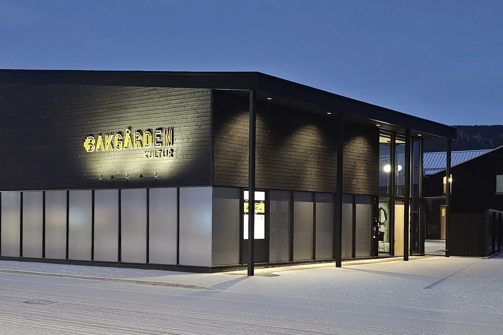
- Byggherre
- Tone Helen og Stein Hauge
- Byggeår
- 2022 -
- Medarbeidere
- Bodil Angard Rian, Heidi K. Hynne, Simon Skogstad
Om prosjektet
Konsertlokale og privatbolig deler en indre gårdsplass i Mosjøen. Øverom, foajé og åpne fasader knytter de to delene sammen, samtidig som gårdsrommet kan brukes til både arrangementer og privat opphold.
Bilder & tegninger11 bilder


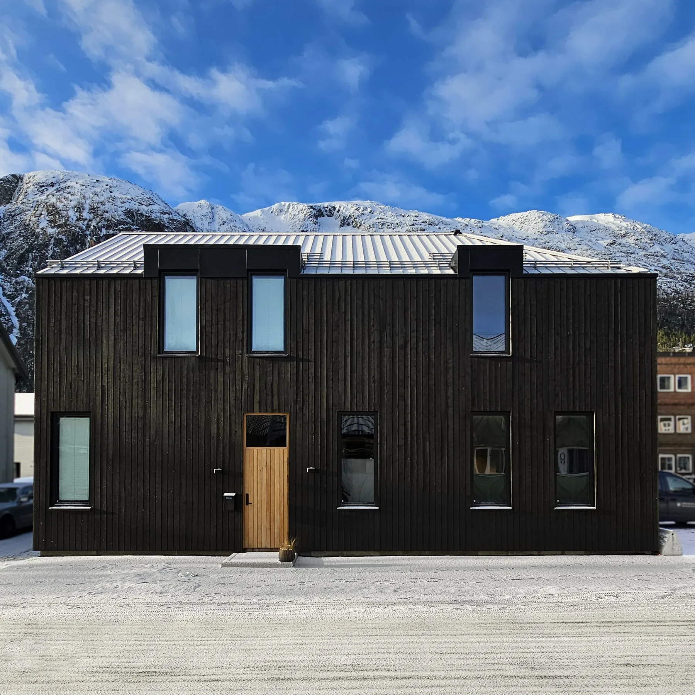
Forstørr
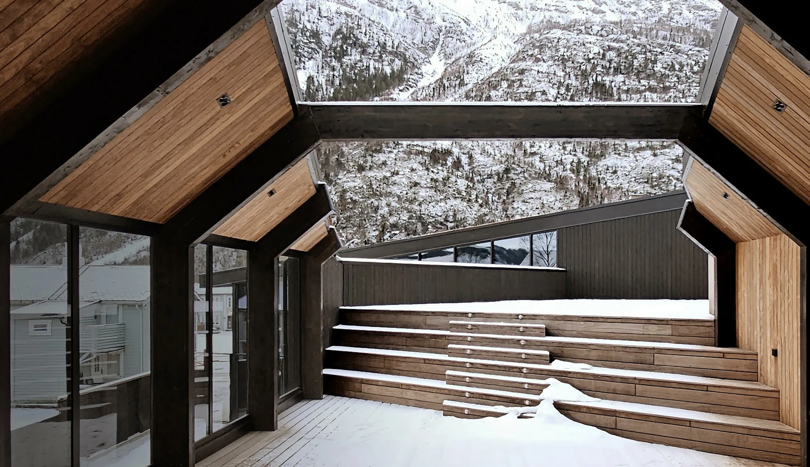
Forstørr
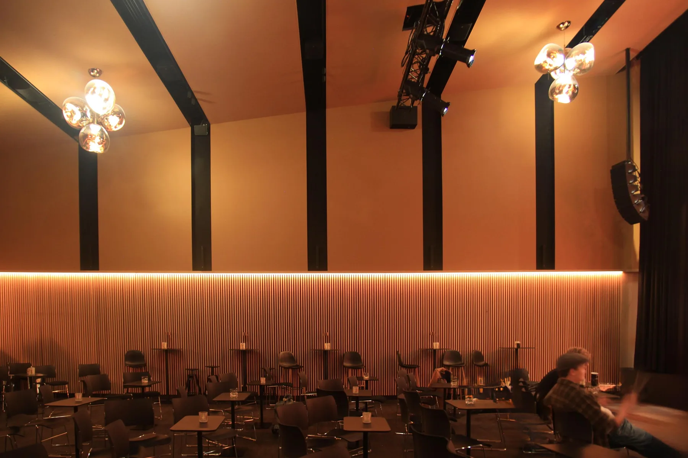
Forstørr
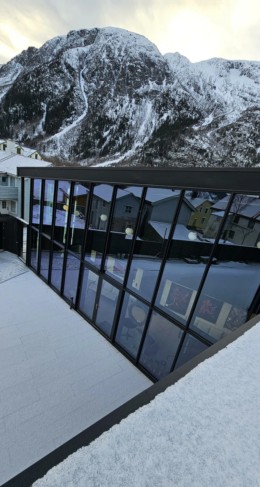
Forstørr
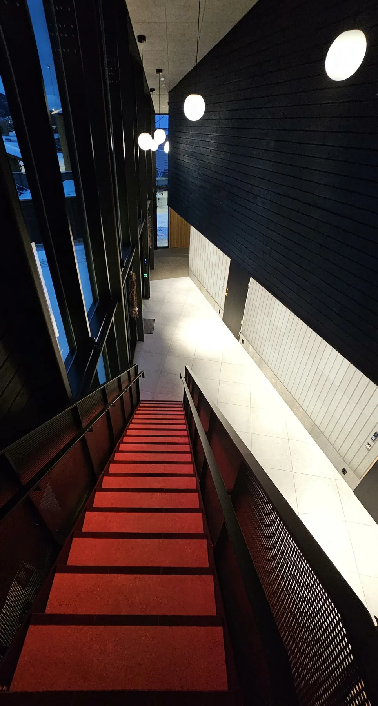
Forstørr
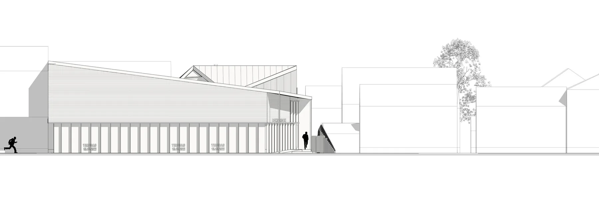
Forstørr
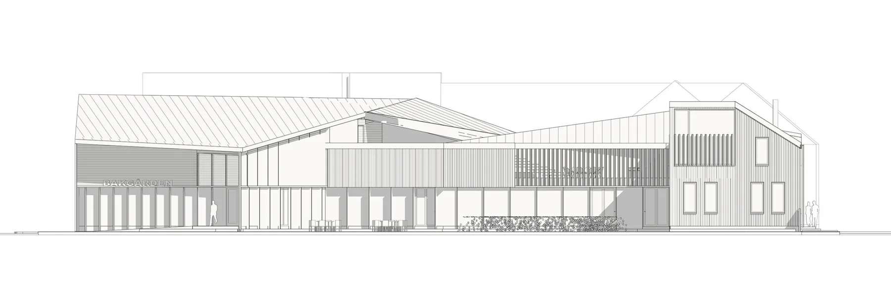
Forstørr
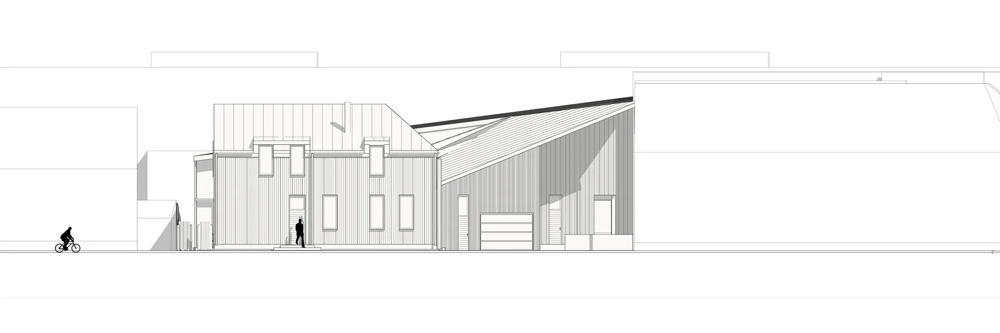
Forstørr
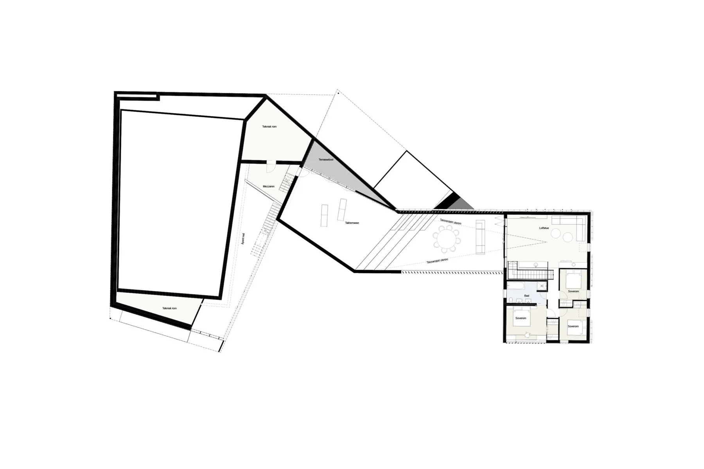
Forstørr
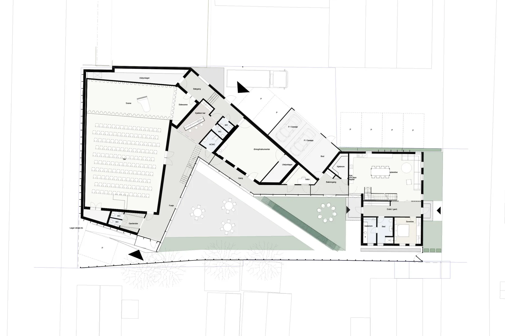
ForstørrLa oss begynne med en samtale